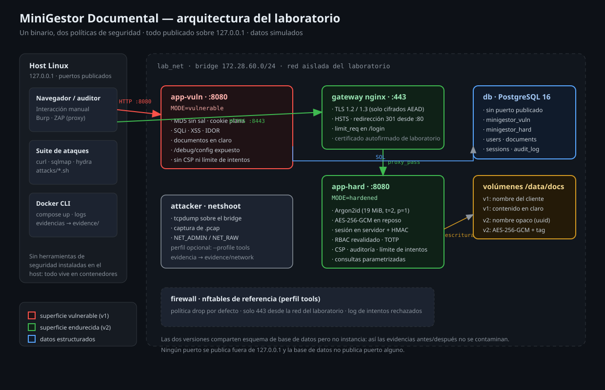
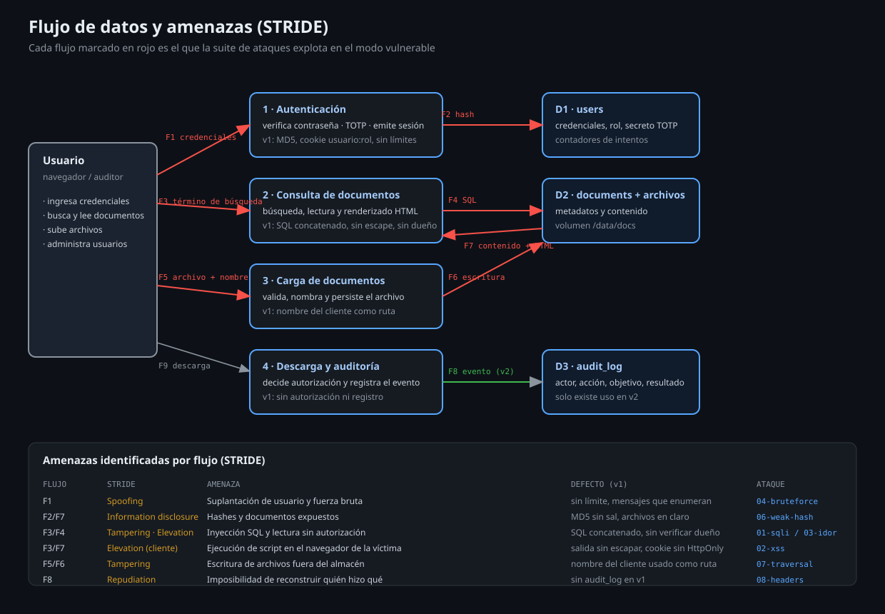

MiniGestor Documental: auditoría, explotación y mitigación con evidencia reproducible.
CIPA de 3 integrantes · Rust + Docker · 20 de noviembre de 2026
curl de distanciaAfirmar «acá nadie entraría» no es un control de seguridad. Lo es medirlo.
MD5 sin sal · cookie usuario:rol en texto plano · SQL concatenado · salida sin escapar · sin verificación de dueño · upload con nombre del cliente · /debug/config expuesto
Argon2id · sesión opaca firmada con HMAC-SHA256 · consultas parametrizadas · escape de salida + CSP · RBAC revalidado · AES-256-GCM en reposo · TOTP · auditoría
Mismo esquema de datos, mismas rutas, mismas pruebas: cambian solo las decisiones de seguridad. Las dos instancias usan bases separadas para que el «después» no herede el estado del «antes».

Todo publicado solo en 127.0.0.1; la base de datos no expone ningún puerto.
A01, A02, A03, A04, A05, A07 y A09, cada uno con su defecto y su control.
MD5 → Argon2id, AES-256-GCM, HMAC-SHA256, TOTP (RFC 6238), TLS 1.2/1.3.
MAGERIT v3 en escala 1–5: 6 activos, 12 riesgos, salvaguardas trazadas al código.
tcpdump en el bridge: credenciales en claro por HTTP vs cifradas por TLS.

| ID | Amenaza | F | D | R | Nivel | Salvaguarda |
|---|---|---|---|---|---|---|
| R1 | Inyección SQL | 5 | 5 | 25 | Crítico | Consulta parametrizada |
| R2 | Lectura de documentos ajenos | 5 | 5 | 25 | Crítico | Verificación de propiedad |
| R4 | Hash de contraseña débil | 5 | 5 | 25 | Crítico | Argon2id |
| R5 | Falsificación de sesión | 5 | 5 | 25 | Crítico | HMAC + sesión en servidor |
| R10 | Interceptación (MITM) | 4 | 5 | 20 | Crítico | TLS + HSTS + Secure |
| R11 | Falta de trazabilidad | 4 | 3 | 12 | Alto | audit_log |
El mapa de calor completo (5×5) se explora en el panel interactivo.
Nueve ataques × dos modos = 18 expectativas. Si una falla, el informe no puede afirmar que la mitigación sirve. El resultado se consolida en evidence/results.json y el panel lo muestra sin intervención manual.
| Ataque | OWASP | Vulnerable | Endurecido |
|---|---|---|---|
| SQL injection en la búsqueda | A03 | Éxito | Bloqueado |
| XSS almacenado | A03 | Éxito | Bloqueado |
| IDOR en /docs/{id} | A01 | Éxito | Bloqueado |
| Fuerza bruta en /login | A07 | Éxito | Bloqueado |
| Falsificación de cookie | A01 | Éxito | Bloqueado |
| Hashes débiles | A02 | Éxito | Bloqueado |
| Path traversal en la carga | A04 | Éxito | Bloqueado |
| Cabeceras ausentes | A05 | Éxito | Bloqueado |
| Credenciales en claro | A02 | Éxito | Bloqueado |
Cookie: sid=alice:admin abre el panel administrativo en v1 y falla en v2.
Tres contraseñas MD5 recuperadas en menos de un segundo; Argon2id no cede al diccionario.
Respaldo: video grabado de la demo, por si falla la red o el proyector.
< que curl -F interpreta como «leer archivo». Corregirlos llevó a 18/18..pcap por HTTP y no existe en claro sobre TLS.Líder y riesgos: MAGERIT, arquitectura, STRIDE, informe.
Desarrollo: aplicación Rust, criptografía, sesiones, TOTP.
Pentesting: suite de ataques, capturas, panel, sustentación.
docker compose up levanta todo el laboratorio; bash attacks/run-all.sh regenera la evidencia.
Gracias. ¿Preguntas?